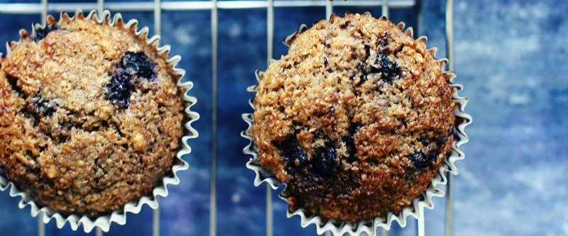

приготовление:
-
Поставить разогреваться духовку на 215 градусов.
-
В миске побольше смешать следующие ингридиенты: 1 яйцо, 160 гр. греческого йогурта, 100 гр. коричневого сахара, перемешать, добавить 85 гр. растопленного кокосового масла и 1 ч.л. ванили - перемешать, и в конце 160 гр. кефира. Все преремешать до однородности.
-
В миске поменьше: 1.5+ ст. (250мл) рассыпчатых пшеничных отрубей, 75 гр. муки, 95 гр. цельнозерновой муки, 1.5 ч.л. пищевой соды, 1 ч.л. с горкой корицы, щепотка соли. Перемешать.
-
Всыпать сухие ингридиенты в жидкие, смешать, но не переусердствовать. Порезать на четвертинки 130 гр. замороженной вишни, аккуратно добавить вместе с 130 гр. черники (можно любые ягоды или их смесь, свежие или замороженные), так, что бы ягоды не подавились.
-
Вставить бумажные формочки в формы для кексов, разлить тесто по формочкам (12 шт), выпекать 30 мин. Можно часть заморозить после остывания и размораживать в микроволновке по желанию.